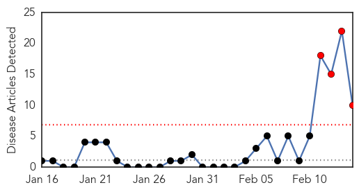

30 Day Trends
Web: 4 alerts, 0 warnings
Twitter: 5 alerts, 0 warnings
Top Articles:
- 0.999
- Pinay OFW shows signs of MERS-CoV
- 0.997
- No last rites for MERS-CoV patients
- 0.993
- Saudi Arabia Invites UN Health Team in Precautionary Measure Against Spread of Respiratory Virus
- 0.992
- Woman in Cotabato watched for virus
- 0.985
- Saudi invites UN health team in precautionary measure against Mers
- 0.984
- Headlines, News, The Philippine Star
- 0.973
- Cebuana found negative of MERS-CoV, Italian tourist suspected of infection still not found
- 0.961
- Two patients remain at RITM for MERS tests
- 0.960
- Cebu News, The Freeman Sections, The Freeman
- 0.925
- Saudi- Woman dies of MERS 7 more infected
Top Tweets:
- 0.517
- RT: Saudi Arabia - 6 health care workers sickened with coronavirus MERS in the last 10 days - February 14 2015 https://t.c…
Web/News Articles
Tweets

Article Locations

Article Confidences